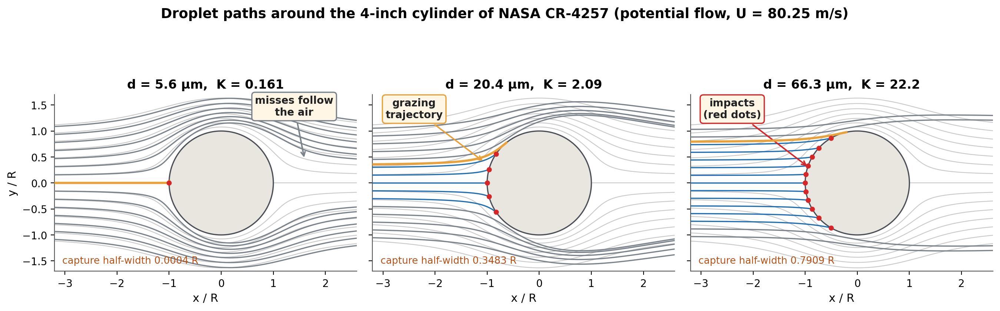
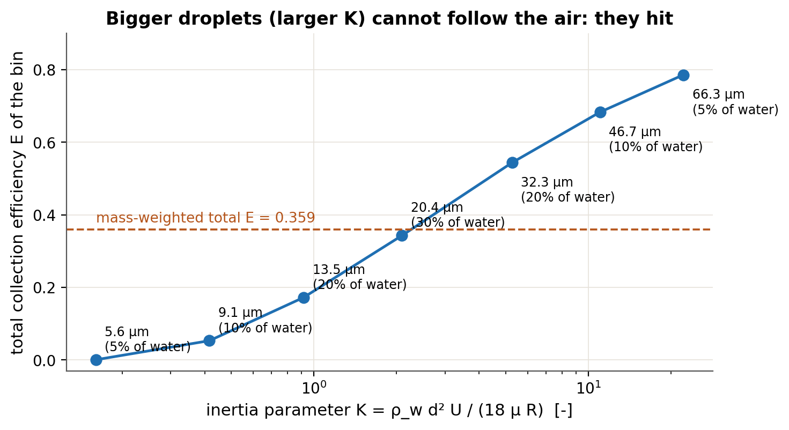
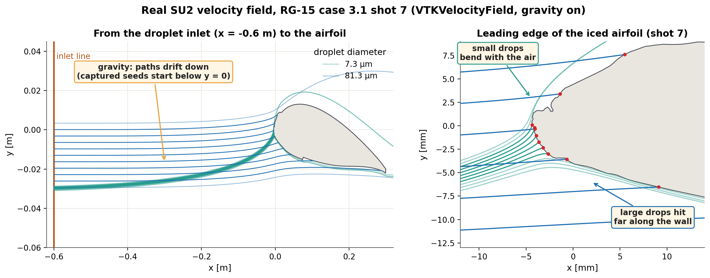
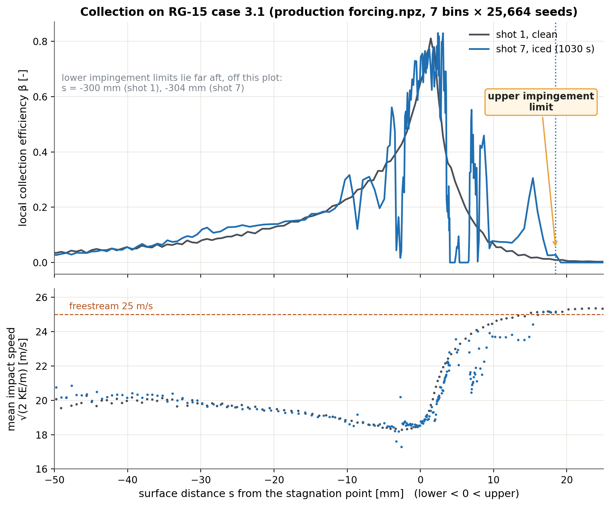
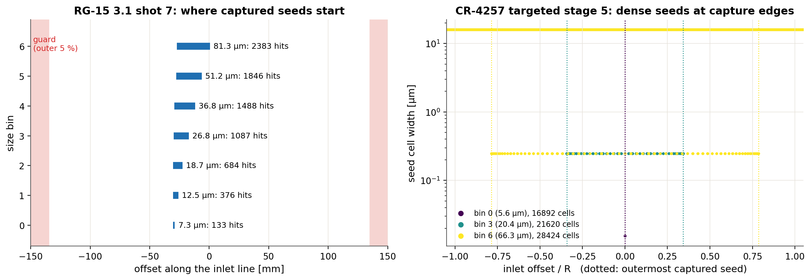
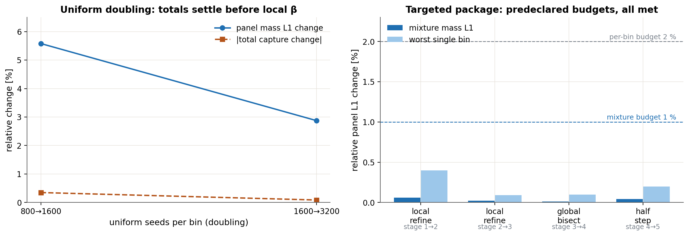
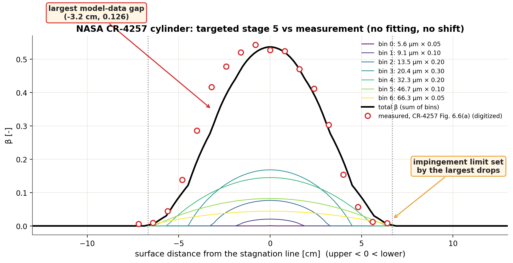
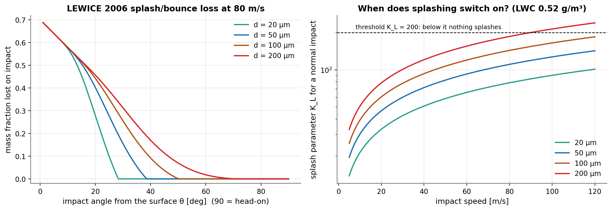

Droplets and collection
With the airflow in hand, the solver follows supercooled cloud droplets from far upstream until they hit the body or fly past it. Counting where the water lands gives the collection efficiency \(\beta\) and the impinging mass and energy on every wall panel: the water supply for ice growth. This page explains the droplet model, how mass is assigned to each simulated droplet, how impacts are found, and the checks that guard against missing water.
- LWC, MVD and collection efficiency Basic
- How a droplet moves Basic
- From inlet seeds to water on panels Intermediate
- Size bins Intermediate
- A real result: RG-15 collection Intermediate
- Is the inlet wide enough and far enough upstream? Intermediate
- Are there enough seeds? Advanced
- Impact kinetic energy and splash Advanced
- Running millions of trajectories: workers and checkpoints Advanced
- Putting the water into material Advanced
- In the code Advanced
- Assumptions and limits Advanced
LWC, MVD and collection efficiency Basic
An icing cloud is described by two numbers.
- LWC, liquid water content: the mass of liquid water per volume of air, in kg/m³ in the code
(usually quoted in g/m³). RG-15 case 3.1 uses 0.52 g/m³ = 0.00052 kg/m³ (
nodal_case_31.json). - MVD, median volumetric diameter: half of the water mass is in droplets smaller than this diameter.
RG-15 uses 27 µm (the revised value of the IPW2 case document,
docs/PROGRESS.md). Inputs namedmvdordiameterare in metres.
If the body did not disturb the air, every droplet in the tube of air ahead of a panel would hit it. The mass flux arriving on a surface facing the flow would be \(\mathrm{LWC}\,U_\infty\) (kg per m² per s). The air does disturb the droplets: it turns around the body, and small droplets turn with it. The local collection efficiency \(\beta\) is the fraction of that undisturbed flux that actually lands on a panel:
$$\beta_i = \frac{\dot m_i}{\mathrm{LWC}\;U_\infty\;\ell_i}$$where \(\dot m_i\) is the water mass rate captured by panel \(i\) (kg per metre span per second) and \(\ell_i\) its length. At the stagnation point of a large body \(\beta\) approaches 1; it falls to 0 at the impingement limits, the farthest points on the upper and lower surfaces that droplets reach. The total collection efficiency \(E\) of a body is the captured mass divided by the flux through its frontal height.
\(\beta\) answers "what share of the water heading for this bit of wall actually arrives?". It is the single most important input for where ice grows, and it is set by how well each droplet can follow the air.
How a droplet moves Basic
Each droplet is a small rigid sphere of water carried by the air. Only two forces act on it: aerodynamic drag, and
(optionally) gravity minus the buoyancy of the displaced air. The air is not affected by the droplets (one-way coupling,
a dilute cloud). In the code (icing/droplets.py, drag_acceleration, and MODELS.md):
Here \(\mathbf x,\mathbf v\) are the droplet position and velocity, \(\mathbf u\) the air velocity at the droplet, \(d\) its diameter, \(\rho_w\) the water density (1000 kg/m³ by default), \(\rho_a, \mu_a\) the air density and viscosity, and \(\mathbf g\) gravity. \(f\) is the Schiller–Naumann correction to Stokes drag; above \(Re_d=1000\) the drag coefficient is held at 0.44. With \(f=1\) the drag is exactly Stokes' law.
def drag_acceleration(velocity, air_velocity, diameter, rho_air=1.225, mu_air=1.72e-5, rho_water=1000.):
slip = np.asarray(air_velocity) - velocity
re = rho_air * np.linalg.norm(slip, axis=-1) * diameter / mu_air
correction = np.where(re <= 1000, 1 + .15 * re ** .687, .44 * re / 24)
return (18 * mu_air / (rho_water * diameter ** 2)) * np.expand_dims(correction, -1) * slipThe Stokes number: why size matters so much
The prefactor \(18\mu_a/(\rho_w d^2)\) is one over the droplet's relaxation time
\(\tau_d = \rho_w d^2/(18\mu_a)\): roughly how long the droplet needs to adjust to a change in the air velocity. Compare
it with the time the air takes to turn around the body, \(R/U_\infty\). Their ratio is the inertia parameter (Stokes
number) used by the project's NACA 1215 benchmark (tools/validate_naca_cylinder.py):
Because \(d\) enters squared, a droplet three times larger has nine times the inertia. Small \(K\): the droplet follows the streamlines and misses. Large \(K\): it ploughs straight on and hits.

collect() on the
analytic potential-flow cylinder of tools/compare_nasa_cylinder.py (NASA CR-4257: 0.1016 m diameter,
80.25 m/s). Grey: air streamlines. Blue: droplets that hit (red dots: impact points); dark grey: misses. Orange: the
grazing trajectory, found by bisecting the inlet offset until the droplet just touches the wall; its
start height is the capture half-width. Left: 5.6 µm droplets (\(K = 0.16\)) follow the air; only a band 0.0004 R wide
hits. Middle: 20.4 µm (\(K = 2.1\)) hit up to 0.35 R. Right: 66 µm (\(K = 22\)) hit up to 0.79 R and reach far around the
cylinder. Script: _build/fig_droplets.py.
runs/nasa4257_capture_limits_001/refinement.json, 10 radii upstream). \(E\) rises
from 0.0004 at \(K=0.16\) to 0.79 at \(K=22\). The mass-weighted mixture gives \(E = 0.359\): the large-drop tail matters far
more than its 5 % mass share suggests.- Deformation, breakup, turbulent dispersion and droplet heat transfer in flight (the incoming droplet temperature is
prescribed). The intended scope is conventional cloud droplets, not supercooled large droplets (
MODELS.md). - Gravity is off by default; RG-15 switches it on (
"gravity": [0, -9.81]). The inlet then still starts droplets at the freestream velocity unless a bin suppliesinlet_velocity; settling slip is not inferred. - Schiller–Naumann is an empirical sphere-drag fit. The NACA 1215 benchmark shows a persistent 6.5 % deficit at
\(K=4\) that the historical drag table does not explain (
docs/VALIDATION.md).
From inlet seeds to water on panels Intermediate
The solver does not simulate a random cloud. It uses a deterministic flux quadrature: a straight inlet line is placed upstream, perpendicular to the freestream, and divided into cells. One droplet ("seed") starts at the midpoint of each cell and carries the mass flux that crosses that cell:
$$\dot m_\text{seed} = \mathrm{LWC}\;(\mathbf v_\text{in}\cdot\hat{\mathbf U})\;\Delta y\;\phi_b$$with \(\Delta y\) the cell width, \(\hat{\mathbf U}\) the freestream direction, \(\mathbf v_\text{in}\) the starting droplet velocity (the freestream by default) and \(\phi_b\) the mass fraction of size bin \(b\). Only the normal velocity counts: it is the flux through the line. A droplet that hits panel \(i\) adds its \(\dot m_\text{seed}\) to that panel; one that crosses the downstream plane is counted as escaped.
Integration and impact detection
Each seed is integrated by SciPy's adaptive Runge–Kutta 45 (scipy.integrate.RK45) with tolerances
rtol, atol and a maximum step max_step (RG-15: 10⁻⁶, 10⁻⁹ and 10⁻⁴ s). The air velocity
comes from the CFD: VTKVelocityField finds the original SU2 cell containing the point and interpolates its
node values linearly. It never interpolates across the solid (no Delaunay bridging); a point outside the CFD mesh is an
error, except inside the body, where an integrator stage that overshoots briefly sees zero velocity until the collision
is located.
while solver.status == 'running':
previous = solver.y.copy()
solver.step()
hit = first_hit(previous[:2], solver.y[:2]) # earliest wall crossing on this segment
if hit is not None:
panel, fraction = hit
impact_v = previous[2:] + fraction * (solver.y[2:] - previous[2:])
if hit is not None or solver.y[:2] @ direction >= downstream:
return dict(panel=panel, impact_velocity=impact_v, ...)
raise UnresolvedDropletError(...) # max_time reached: never counted as escapefirst_hit (Surface.fixed_intersector in icing/geometry.py) solves the
segment–segment intersection with every panel and returns the one with the smallest line parameter, so a droplet that
crosses a thin horn hits its first face. The impact velocity is interpolated linearly along the step. Because the test uses
the straight chord of each step, MODELS.md calls maximum-step refinement "mandatory".
The mass ledger
collect() keeps three independent sums: launched, impacted (plus splashed, if splash is on) and escaped.
Two checks follow, and either failing stops the run:
beta = mass / (lwc * speed * surface.lengths)
if abs(result.mass_residual) > 1e-11 * max(launched, 1e-30):
raise RuntimeError('Droplet flux ledger did not close')
inlet_flux = lwc * inlet_width * sum(b.mass_fraction * normal_speed(b) for b in bins)
if abs(launched - inlet_flux) > 1e-10 * max(inlet_flux, 1e-30):
raise RuntimeError('Tracked droplet weights do not carry the inlet mass flux')The first is a rounding check (launched = impacted + escaped + splashed). The second is independent: the seed weights
must add up to the analytical flux through the whole inlet. A trajectory that neither hits nor leaves within
max_time raises UnresolvedDropletError with a full diagnostic; it is never quietly dropped. For
RG-15 3.1 shot 7 the ledger residual was −1.8×10⁻¹⁷ kg/(m s) on a capture of 1.68×10⁻⁴ kg/(m s)
(collect/audit.json).
MODELS.md gives the reasons: individual trajectories handle crossing paths (which an Eulerian
pressureless-fluid model cannot without extra closures), and they separate inlet-quadrature error from CFD-mesh error,
which can then be refined separately. Eulerian transport is noted as attractive for 3-D but is not implemented.
Size bins Intermediate
A real cloud has a spread of sizes. The solver represents it with DropletBins, each with a diameter and a
mass fraction (not a number fraction); the fractions must sum to one within 10⁻¹². Each bin is seeded and
tracked separately, and their panel masses add up. The cases used here have seven bins with mass fractions
0.05 / 0.10 / 0.20 / 0.30 / 0.20 / 0.10 / 0.05, the seven-bin distribution given in the IPW-2 case description (data/rg15_ipw2/conditions.json).
The code does not name it; the diameters come from each source: CR-4257 Table E.5 for the cylinder
(\(d/\mathrm{MVD}\) from 0.277 to 3.25, data/nasa_cr4257_cylinder.json) and the IPW2 v12 case document for RG-15
(7.3 to 81.3 µm).
Bins matter beyond the average: Figure 2 shows that the 5 % largest-drop bin is captured far more efficiently than the smallest, and it alone sets the impingement limits. That is why the seed-refinement test checks every bin separately (below).
A real result: RG-15 collection Intermediate
In a campaign, campaign.run_collection builds a VTKVelocityField from the shot's accepted
flow.vtu, scaled by \(U_\infty\), and calls collect() with the nodal case's droplet settings and a
fixed number of seeds per bin (collection_seeds: 25,664 for RG-15). Note that the campaign removes the
case's seed_refinement block and does not run the refinement loop; refinement is done in separate studies
(below) and in the legacy controller. The result is saved as forcing.npz (surface points and ids,
mass_rate, kinetic_rate, beta) and sealed with an audit.json that says
collection_qualified: false.


shot_01/collect/forcing.npz and
shot_07). Top: \(\beta\) peaks at 0.81 on the clean airfoil and 0.83 on the iced one, where it becomes jagged:
zero in the shadow behind ice features, peaks on faces turned to the flow. The upper impingement limit (dotted) moves from
31.7 mm to 18.5 mm as the horn shields the upper surface; on the lower surface the largest drops reach almost to the
trailing edge (about −300 mm). Bottom: the mass-weighted mean impact speed \(\sqrt{2\,\dot E_k/\dot m}\): 18–19 m/s at the
nose, where the air decelerates the droplets, rising to the 25 m/s freestream at the grazing limits.Is the inlet wide enough and far enough upstream? Intermediate
If the inlet line is too narrow, droplets that would have hit the body are never launched and the water is silently
lost. The quadrature cannot see this; the ledger still closes. So before any ice growth, an inlet-capture
audit runs (icing/validation.py, inlet_capture_audit): for each size bin, it checks
whether any captured seed started in the outer 5 % at either end of the inlet, always including the first and last seed.
If so, the stage stops ('Collection failed the inlet-guard or positive-capture check' in campaigns). Zero
total capture also stops it.
hit=rows[:,2]>=0
outer=(np.abs(rows[:,1])>=(.5-guard_fraction)*inlet_width)
outer|=(rows[:,1]==rows[:,1].min())|(rows[:,1]==rows[:,1].max())
edge=bool(np.any(hit & outer))
collect/audit.json). Each bar is the range of
inlet offsets whose seeds hit, per bin; the shaded strips are the 5 % guards of the 0.3 m inlet. All capture lies well
inside: guard clear. Right: the targeted cylinder study puts its seeds where they matter. Each dot is one inlet cell of
the archived stage-5 partition: 0.25 µm cells across each bin's capture band (dotted: outermost captured seed), about 16 µm
outside. Bin 0 is only ±15.6 µm wide and gets its own much finer cells.The audit's own scope string says it: "Observed inlet-edge capture only; not a convergence certificate." Sampled seeds can miss a narrow island of capture. Upstream distance and inlet width must be varied separately.
The George upstream study
The project learned this on the George case (runs/george_upstream_wide_return_001/INTERPRETATION.md).
Moving the inlet from x = −0.4 m to −0.8 m with the same narrow width lost capture outside the strip's lower edge
(gravity and the longer path shifted the capture band). Widening it at unchanged seed spacing recovered 3,732 impacts in
the added strips: 41.1 % of the wider run's captured mass. Seeds in the overlap kept their hit or miss
status (one changed panel), so the difference was injection coverage, not droplet physics. The corrected wide run
(9,083 impacts, 5.66×10⁻⁵ kg/(m s), guards clear) differs from the original x = −0.4 m result by 0.85 % in panel-mass L1
and 0.85 % in kinetic-energy L1. The document is careful to call this bounded sensitivity evidence, not a strict
single-variable convergence study.
Are there enough seeds? Advanced
With midpoint quadrature, the seed spacing sets how sharply the capture band edges and the panel-by-panel deposition are resolved. Two tools address this.
Uniform doubling: refined_collect
icing/collection_refinement.py doubles the seeds per bin and compares each level with the previous one on
the identical surface and flow. A comparison passes only if all of these are within the tolerance (default 1 %):
the total captured mass change, the panel-mass L1 change, the kinetic-energy L1 change, and the panel-mass L1 change of
every bin. It stops when a set number of consecutive comparisons pass (default 2), when capture reaches the inlet
guard, or when the seed budget is spent. The L1 norm matters: moving the same water between panels leaves the total
unchanged but changes local ice growth (MODELS.md).
Targeted partitions: inlet_quadrature
Instead of doubling everywhere, transition_intervals finds where neighbouring seeds change label (hit
panel or miss), and refine_partition subdivides only cells overlapping those intervals, keeping all old edges.
collect(bin_inlet_edges=...) then uses one partition per bin, each cell weighted by its own width. Its
docstring warns: "Equal adjacent labels are not evidence of a constant label between them." A separate global refinement
is still needed to catch missed islands.

runs/nasa4257_local_seed_refinement_001). The total capture changes by only 0.35 % and then 0.09 %, but the
panel-mass L1 change is 5.6 % and then 2.9 %: totals settle long before local \(\beta\). Right: the frozen targeted
package (docs/CYLINDER_TARGETED_RETURN.md), with budgets declared before the run: two local refinements, a
global bisection of every cell and a halved trajectory step all stay under 1 % (mixture) and 2 % (worst bin). Stage 5 used
156,440 seeds and about 3.2 hours.
deliverables/nasa_cylinder_targeted/results/stage_5/collection.npz) against the digitized CR-4257
data. Coloured lines are each bin's contribution (each is already weighted by its mass fraction); black is their sum. The
largest bins set the impingement limits (dotted). No shift, smoothing or rescaling was applied. The model is symmetric
but the measured curve is not; RMSE is 0.048 and the worst point is −0.126 at −3.2 cm. The velocity is incompressible
potential flow (no boundary layer, freestream Mach 0.24), so this does not test the SU2 coupling, and
VALIDATION.md assigns no validation pass.Impact kinetic energy and splash Advanced
A droplet arriving at speed \(|\mathbf v_\text{imp}|\) brings kinetic energy, which the energy balance counts as a heat source (it is small at 25 m/s but grows with \(U^2\)). Each panel collects
$$\dot E_{k,i} = \sum_{\text{seeds}\to i} \dot m_\text{dep}\;\tfrac12|\mathbf v_\text{imp}|^2 \quad[\mathrm{W/m}]$$stored as kinetic_rate next to mass_rate. The seed-refinement test checks it with the same L1
tolerance as the mass (Figure 5 bottom shows the resulting mean impact speeds).
Optional splash and bounce: SplashModel
Large or grazing droplets can splash or bounce instead of sticking. An optional mass-loss correlation from LEWICE
(Wright, NASA/CR-2006-214132) is implemented in SplashModel (splash: {} in a case enables it; it is
off in the RG-15 cases):
where \(\theta\) is the impact angle measured from the surface, \(Re=\rho_w V d/\mu_w\) and \(Oh=\mu_w/\sqrt{\rho_w\sigma d}\). The lost fraction leaves the domain; the deposited part keeps the incoming specific kinetic energy.

SplashModel.loss_fraction and
parameter at the RG-15 LWC. Left: at 80 m/s, a head-on impact never loses mass; grazing impacts lose up
to 70 %, and larger drops start losing at steeper angles. Right: for a normal impact even a 200 µm drop only crosses the
threshold above about 90 m/s, so at RG-15's 25 m/s splash is negligible except for grazing impacts.The docstring records an interpretation problem: the source prints \(K_L\) with \(K\), but taken literally every calibration case would sit far above threshold, so the code uses \(\sqrt K\); "This reading should be checked against LEWICE 3.2 itself before quantitative use." The correlation was calibrated to LEWICE's own collection at 175 mph and lumps splash and bounce; no secondary droplets or re-impingement are tracked.
Running millions of trajectories: workers and checkpoints Advanced
RG-15 tracks 7 × 25,664 = 179,648 seeds per shot; shot 7 took 931 s on 16 workers. Passing an execution
object to collect() switches to droplet_execution.execute_seeds (docs/PARALLEL_DROPLETS.md):
- Workers. Separate spawned processes (not threads), each with its own VTK field reader rebuilt from a
hashed specification (path, SHA-256, velocity array name, scale). Only fields that can be rebuilt this way
(
VTKVelocityField,UniformField,CylinderPotentialField) are allowed in parallel. - Batches. Seeds go out in batches (32 in campaigns), one batch per worker in flight; results are reassembled in the original bin/seed order, so the answer is identical to serial (tests compare 1, 2 and 6 workers exactly).
- Checkpoints. With a
checkpoint_dir, each finished batch is written bydroplet_checkpoint.BatchStoreas a payload plus a receipt holding its SHA-256, under a folder named by the hash of everything that defines the result (surface, field, seed table, tolerances, code identity). Rerunning the same call reuses committed batches and computes only the missing ones; any change of inputs selects a new folder. An OS file lock prevents two writers. - Budgets. A memory admission check (campaigns allow 85 % of the scheduler allocation) and a per-batch wall-time limit stop the level cleanly, keeping committed batches.
execution = dict(workers=site['workers'], batch_size=32, checkpoint_dir=str(dest / 'batches'))
if site.get('memory_mb'):
execution['memory_budget_mb'] = .85 * site['memory_mb']
result = collect(surface, field, **d, execution=execution)
audit = inlet_capture_audit(result.seed_records, d['inlet_width'])
if audit['capture_at_guard'] or result.impacted <= 0:
raise RuntimeError('Collection failed the inlet-guard or positive-capture check')Related: flow_recovery.solve_with_recovery can store a fully validated completed flow in the same
checkpoint area, so a resumed droplet stage does not need to rerun SU2.
Putting the water into material Advanced
The collection output is a rate per panel. What happens next depends on the ice path (see Step 5 and Step 8), but two modules deal directly with turning captured water into material.
deposition_transfer.py(docs/DEPOSITION_TRANSFER.md). When the new ice surface is smoothed, the volume swept by each panel no longer equals the volume its own water would fill. This module finds a sparse, non-negative allocation of each donor panel's new mass and enthalpy to receiving swept cells, minimising the volume-weighted distance, within an explicit neighbourhood (default: same or adjacent panel). It conserves mass and enthalpy exactly, keeps donor materials distinct, and fails rather than reach further. On a saved George increment the mass residual was zero and the enthalpy residual 4.4×10⁻¹⁶ J/m, with 2.6 % of the deposit moved off-diagonal. It is numerical redistribution, not a model of lateral ice flow.resolved_deposition.py(grow_resolved_nodal_deposition) carries nodal donor fragments through panel projection and swept geometry into resolved solid cells, each cell keeping every contributing material separately. In the resolved wet-film path (docs/RESOLVED_DROPLET_DEPOSITION.md,collected_phase.advance_collected_phase_mesh_step), incoming mass is the duration times the collected rate and incoming energy is \(\dot m\,c_w(T_d - T_m)\) plus the impact kinetic power, mixed into the top liquid cell. That document is explicit: complete capture and full thermalisation of impact energy are assumed, the mixing is a numerical closure, and no real CFD or validation run was made for that change.
In the code Advanced
icing/droplets.py:drag_acceleration,DropletBin,SplashModel,collect,_track_seed,Collection,UnresolvedDropletError.icing/fields.py:VTKVelocityField(native-cell interpolation),CylinderPotentialField(verification only),UniformField.icing/validation.py:inlet_capture_audit,collection_metrics.icing/collection_refinement.py:SeedRefinement,refined_collect.icing/inlet_quadrature.py:transition_intervals,refine_partition.icing/droplet_execution.py:DropletExecution,SeedExecutor,execute_seeds.icing/droplet_checkpoint.py:BatchStore(content-addressed batches with receipts).icing/campaign.py:run_collection(campaign stage, writesforcing.npz).icing/deposition_transfer.py,icing/resolved_deposition.py: water into material.
How seeds and their weights are built
ds = inlet_width / seeds
offsets = (np.arange(seeds) + .5) * ds - inlet_width / 2 # cell midpoints
widths = np.full(len(offsets), ds)
for bin_index, drop in enumerate(bins):
inlet_speed = speed if drop.inlet_velocity is None else float(inlet_velocity @ direction)
for seed_index, (offset, width) in enumerate(zip(offsets, widths)):
tasks.append(dict(bin_index=bin_index, seed_index=seed_index, diameter_m=drop.diameter,
initial=np.r_[center + offset * normal, inlet_velocity].tolist(),
weight=float(lwc * inlet_speed * width * drop.mass_fraction)))Before this, collect() checks that the inlet is upstream of the whole surface, that the downstream escape
plane lies strictly beyond it (otherwise a future impact could be booked as an escape while the ledger still closes), and
that every bin's inlet velocity actually enters through the inlet. Each finished seed produces a record row
(bin, inlet offset, panel or −1, mass rate): these seed_records feed the audit and the per-bin refinement checks.
Assumptions and limits Advanced
- Dilute, one-way coupled, rigid spherical droplets; no breakup, deformation, turbulent dispersion or in-flight heat transfer. Splash and bounce only through the optional LEWICE correlation.
- Uniform LWC and uniform droplet velocity across the inlet; gravitational settling slip is not inferred.
- The downstream crossing is an open-boundary assumption; recirculation that would carry droplets back is not followed beyond it.
- Seed, inlet width, upstream distance and trajectory step are separate numerical errors. Matching quadratures and a
closed ledger do not prove spatial convergence (
MODELS.md); campaign collections carrycollection_qualified: false. - Experimental comparisons so far (CR-4257 cylinder) use potential flow and are not validation passes. The collected water also inherits every error of the CFD field it flies through.
Next: the captured water and its energy enter the freezing energy balance.